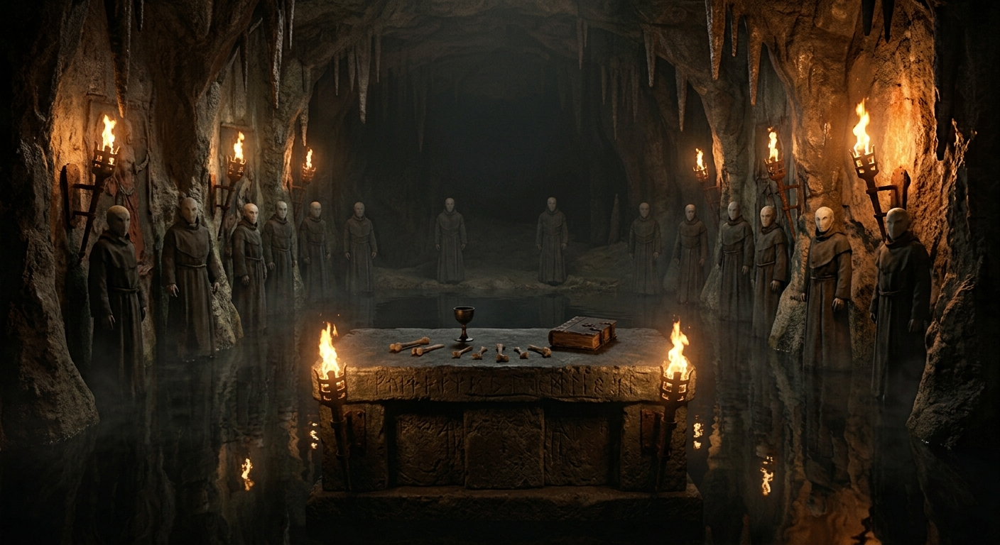
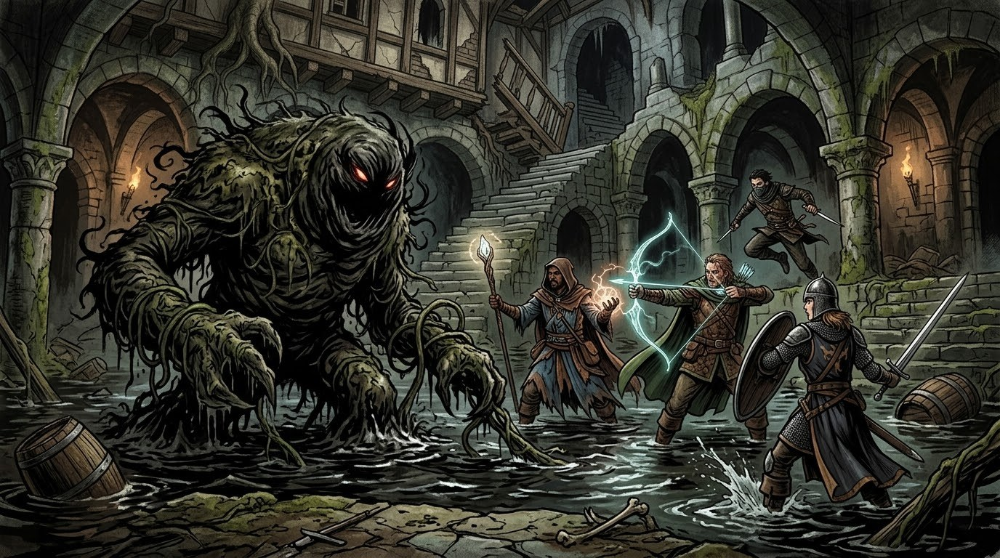
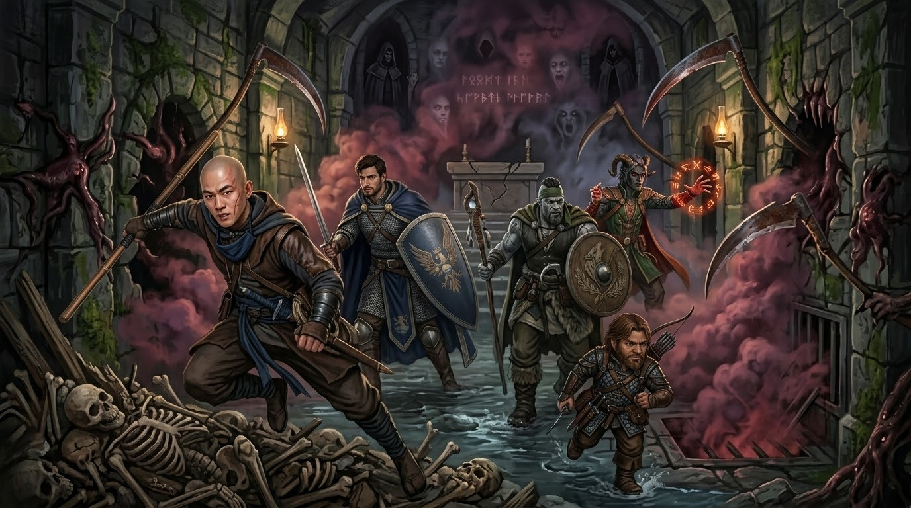

Qualcuno deve morire
Al risveglio
Al risveglio, la prima cosa che il gruppo vede è impossibile: Floki, che la notte prima era morto tra le braccia del fratello Logan, è seduto su un baule. Ha gli occhi completamente neri, e della ferita mortale non resta traccia. Nessuno sa spiegare come sia tornato, né se sia davvero ancora lui.
Il gruppo scende per vedere se le porte si sono aperte, ma la porta d'ingresso è ancora chiusa. Accendono il camino: prende fuoco subito ma non scalda. Floki rileva magia in tutta la stanza.
Il sotterraneo
Tornati di sotto, trovano alcove con giacigli di paglia e poi una stanza con letti e forzieri, che scassinano. Bastian cade in una trappola piena di spuntoni di legno e quasi muore. La cantilena si fa sempre più forte.
Lui è l'antico… Lui è la terra.La cantilena nel sotterraneo
Il gruppo attraversa una stanza con nicchie e reliquie, poi scende per una ripida discesa fino a un cancello. Logan lo solleva e tutti passano in una sala allagata, circa 60 cm d'acqua, con una pedana rialzata al centro. Qui la cantilena si interrompe.

L'altare
Zane e Bastian si avvicinano a un mucchio di rifiuti che sembrano vivi, mentre Chirrut scopre che una roccia si può spostare. Floki e Logan salgono sull'altare e compaiono dodici spiriti senza volto.
Qualcuno deve morire.La cantilena riprende
Il cumulo
Floki sposta i rifiuti con la mano magica e questi si muovono come un unico corpo. Il suo fulmine li blocca per un attimo, ma la fiamma sacra di Bastian li anima del tutto: è Lorghoth il Putrido, un cumulo strisciante. Si tira l'iniziativa.
Logan scende dall'altare, gli spettri spariscono e si scatena un terremoto. Con un 1 naturale Logan perde il bastone ferrato, inghiottito dal cumulo. Quando Floki si avvicina alla porta, Logan viene risucchiato dentro il cumulo, dove ritrova il bastone.
La fine sta arrivando, lode a te o morte.La cantilena cambia
Logan si trasforma in ragno e scappa.

La fuga
Il gruppo ripara nella stanza dietro la roccia, che sembra una prigione. Il terremoto continua e tutti risalgono fino in soffitta. Si tira di nuovo l'iniziativa.
La casa si ribella
La casa è irriconoscibile: le porte sono diventate lame di falce, il camino sputa fumo nero e velenoso, le pareti marciscono. Floki sfonda il pavimento e cade al secondo piano. Zane, Logan e Bastian sfondano anche quello e precipitano al primo, dove c'è il camino velenoso. Tutti si ritrovano lì, e il fumo li sta uccidendo.
Chirrut, già avvelenato, sfonda una parete e uno sciame di topi gli si avventa addosso: Chirrut cade, ma Bastian lo salva. Anche Zane cade tra le lame e viene salvato.

Fuori dalla Casa Durst
In qualche modo il gruppo blocca le lame e finalmente esce. La nebbia non li avvolge più e, alle loro spalle, la casa sembra nuova. Davanti a loro rivedono il villaggio e sentono gli stessi lamenti di prima di entrare.